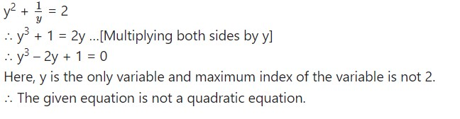
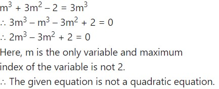
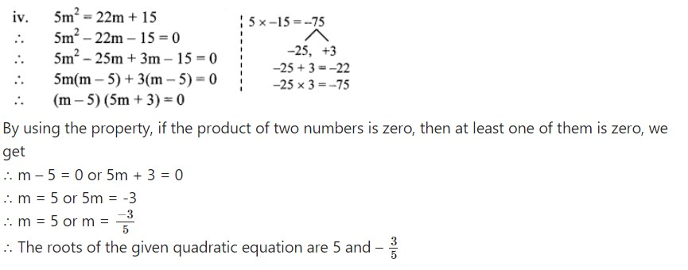
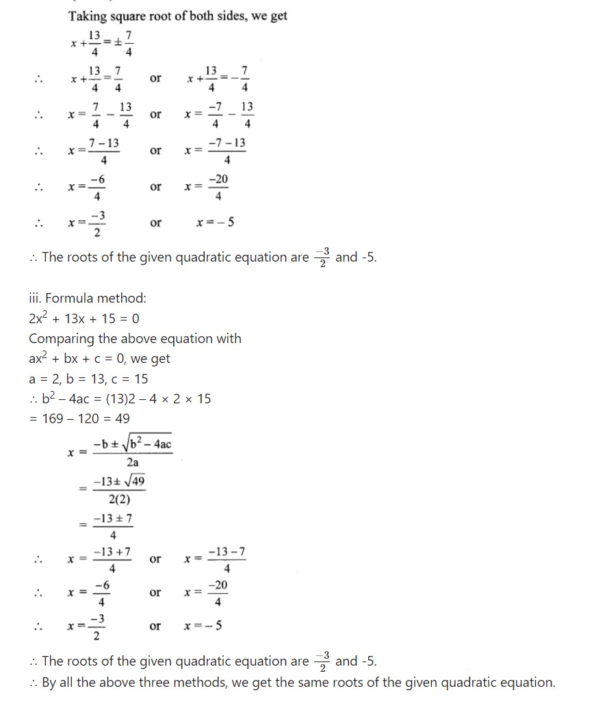
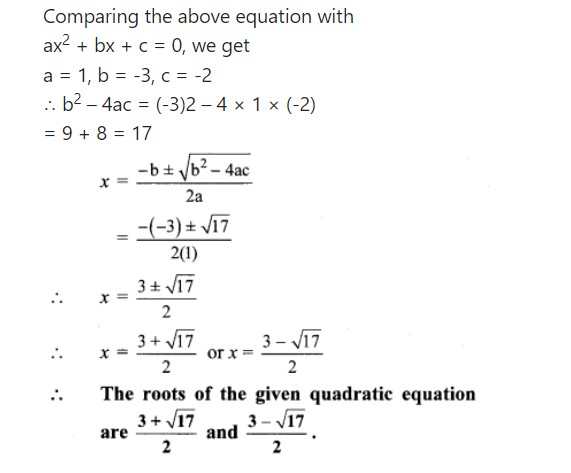
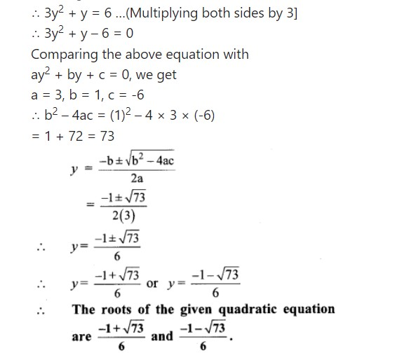
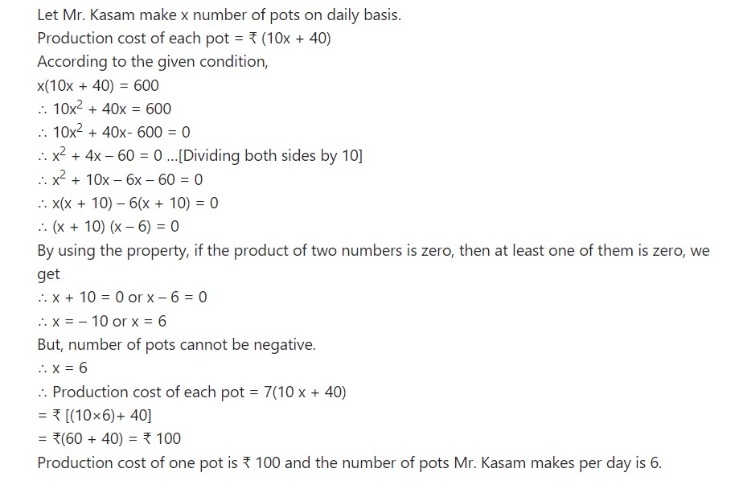

2. Quadratic Equations
Let's study.
Let's recall.
You have studied polynomials last year. You know types of polynomials according to their degree. When the degree of polynomial is 1 it is called a linear polynomial and if degree of a polynomial is 2 it is called a quadratic polynomial.
Activity : Classify the following polynomials as linear and quadratic.
Now equate the quadratic polynomial to 0 and study the equation we get. Such type of equation is known as quadratic equation. In practical life we may use quadratic equations many times.
Ex. Sanket purchased a rectangular plot having area 200 m2. Length of the plot was 10 m more than its breadth. Find the length and the breadth of the plot.
Let the breadth of the plot be x metre.
∴ Length = (x + 10) metre
Area of rectangle = length ́ breadth
∴ 200 = (x + 10) ́ x
∴ 200 = x2 + 10 x
That is x2 + 10x = 200
∴ x2 + 10x - 200 = 0
Now, solving equation x2 + 10x - 200 = 0, we will decide the dimensions of the
plot.
Let us study how to solve the quadratic equation.
Let's recall.
Activity : x^2 + 3x -5, 3x^2 - 5x, 5x^2 ; Write the polynomials in the index form. Observe the coefficients and fill in the boxes.F
x^2 + 3x -5 , 3x^2 - 5x + 0 , 5x^2 + 0x + 0
Let's learn.
Standard form of quadratic equation
The equation involving one variable and having 2 as the maximum index of the variable is called the quadratic equation.
Let's learn.
Standard form of quadratic equation
In the previous class you have studied that if value of the polynomial is zero for x = a then (x - a) is a factor of that polynomial. That is if p(x) is a polynomial and p(a) = 0 then (x - a) is a factor of p(x). In this case ’a’ is the root or solution of p(x) = 0

Solved Example:-

Solution:-
Let’s remember!
PRACTICE SET 2.1
Q1. Write any two quadratic equations.
Solution:-
Q2. Decide which of the following are quadratic equations.
(1) x2 + 5 x - 2 = 0
Solution:-
The given equation is x2 + 5x – 2 = 0
Here, x is the only variable and maximum index of the variable is 2.
a = 1, b = 5, c = -2 are real numbers and a ≠ 0.
∴ The given equation is a quadratic equation.
(2) y2 = 5 y - 10
Solution:-
y2 = 5y – 10
∴ y2 – 5y + 10 = 0
Here, y is the only variable and maximum index of the variable is 2.
a = 1, b = -5, c = 10 are real numbers and a ≠ 0.
∴ The given equation is a quadratic equation.
Solution:-
Solution:-
(5) (m + 2) (m - 5) = 0
Solution:-
(m + 2) (m – 5) = 0
∴ m(m – 5) + 2(m – 5) = 0
∴ m2 – 5m + 2m – 10 = 0
∴ m2 – 3m – 10 = 0
Here, m is the only variable and maximum index of the variable is 2.
a = 1, b = -3, c = -10 are real numbers and a ≠ 0.
∴ The given equation is a quadratic equation.
Solution:-
Q3. Write the following equations in the form ax2 + bx + c = 0, then write the values of a, b, c for each equation.
(1) 2y =10 - y2
Solution:-
∴ y2 + 2y – 10 = 0
Comparing the above equation with
ay2 + by + c = 0, we get
a = 1, b = 2, c = -10
(2) (x - 1)2 = 2 x + 3
Solution:-
∴ x2 – 2x + 12x + 3
x2 – 2x + 1 – 2x – 30
∴ x2 – 4x – 2 = 0
Comparing the above equation with
ax2 + bx + c = 0, we get
a = 1, b = -4, c = -2
(3) x2 + 5x = -(3 - x)
Solution:-
∴ x2 + 5x = -3 + x
∴ x2 + 5x – x + 3 = 0
∴ x2 + 4x + 3 = 0
Comparing the above equation with
ax2 + bx + c = 0, we get
a = 1, b = 4, c = 3
(4) 3m2 = 2m2 - 9
Solution:-
∴ 3m2 – 2m2 + 9 = 0
∴ m2 + 9 = 0
∴ m2 + 0m + 9 = 0
Comparing the above equation with
am2 + bm + c = 0, we get
a = 1, b = 0, c = 9
(5) P (3 + 6p) = -5
Solution:-
∴ 3p + 6p2 = -5
∴ 6p2 + 3p + 5 = 0
Comparing the above equation with
ap2 + bp + c = 0, we get
a = 6, b = 3, c = 5
(6) x2 - 9 = 13
Solution:-
∴ x2 – 9 – 13 = 0
∴ x2 – 22 = 0
∴ x2 + 0x – 22 = 0
Comparing the above equation with
ax2 + bx + c = 0, we get
a = 1, b = 0, c = -22
Q4. Determine whether the values given against each of the quadratic equation are the roots of the equation.
(1) x2 + 4x - 5 = 0 , x = 1, -1
Solution:-
x2 + 4x – 5 = 0 …(i)
Putting x = 1 in L.H.S. of equation (i), we get
L.H.S. = (1)2 + 4(1) – 5 = 1 + 4 – 5 = 0
∴ L.H.S. = R.H.S.
∴ x = 1 is the root of the given quadratic equation.
Putting x = -1 in L.H.S. of equation (i), we get
L.H.S. = (-1)2 + 4(-1) – 5 = 1 – 4 – 5 = -8
∴ LH.S. ≠ R.H.S.
∴ x = -1 is not the root of the given quadratic equation.
Solution:-

Q5. Find k if x = 3 is a root of equation kx2 - 10x + 3 = 0 .
Solution:-
to find the value of ’k’.
Solution:-
------------------------------------------------------------ ------------------------------------------------------------ -------------------------------------------------
Let’s learn.
Solutions of a quadratic equation by factorisation
By substituting arbitrary values for the variable and deciding the roots of quadratic equation is a time consuming process. Let us learn to use factorisation method to find the roots of the given quadratic equation.
x2 - 4 x - 5 = (x - 5) (x + 1)
(x - 5) and (x + 1) are two linear factors of quadratic polynomial x2 - 4 x - 5.
So the quadratic equation obtained from x2 - 4 x - 5 can be written as
(x - 5) (x + 1) = 0
If product of two numbers is zero then at least one of them is zero.
∴ x - 5 = 0 or x + 1 = 0
∴ x = 5 or x = -1
∴ 5 and the -1 are the roots of the given quadratic equation.
While solving the equation first we obtained the linear factors. So we call this method as ’factorization method’ of solving quadratic equation.
Solved Example:-
PRACTICE SET 2.2
Q1. Solve the following quadratic equations by factorisation.
(1) x2 - 15 x + 54 = 0
Solution:-
(2) x2 + x - 20 = 0
Solution:-
(3) 2y2 + 27 y + 13 = 0
Solution:-
(4) 5m2 = 22 m + 15
Solution:-
------------------------------------------------------------ ------------------------------------------------------------ -------------------------------------------------
Let’s learn.
Solution of a quadratic equation by completing the square
Solved Exmaple:-
PRACTICE SET 2.3
Q. Solve the following quadratic equations by completing the square method.
(1) x2 + x - 20 = 0
Solution:-
(2) x2 + 2 x - 5 = 0
Solution:-
(3) m2 - 5 m = -3
Solution:-

(4) 9y2 - 12 y + 2 = 0
Solution:-
(5) 2y2 + 9y + 10 = 0
Solution:-
(6) 5x2 = 4x +7
Solution:-
Let's learn.
Formula for solving a quadratic equation
Solved Example:-

Activity : Solve the equation 2x2 + 13x + 15 = 0 by factorisation method, by completing the square method and by using the formula. Verify that you will get the same roots every time.
Solution:-

PRACTICE SET 2.4
Q1. Compare the given quadratic equations to the general form and write values of a, b, c.
(1) x2 - 7x + 5 = 0
Solution:-
Comparing the above equation with
ax2 + bx + c = 0, we get
a = 1, b = -7, c = 5
(2) 2m2 = 5m - 5
Solution:-
∴ 2m2 – 5m + 5 = 0
Comparing the above equation with
am2 + bm + c = 0, we get
a = 2, b = -5, c = 5
(3) y2 = 7y
Solution:-
∴ y2 – 7y + 0 = 0
Comparing the above equation with
ay2 + by + c = 0, we get
a = 1, b = -7, c = 0
Q2. Solve using formula.
(1) x2 + 6x + 5 = 0
Solution:-
(2) x2 - 3x - 2 = 0
Solution:-
(3) 3m2 + 2m - 7 = 0
Solution:-
(4) 5m2 - 4m - 2 = 0
Solution:-

Solution:-
(6) 5x2 + 13x + 8 = 0
Solution:-

Q3. With the help of the flow chart given below solve the equation x2 + 2√3 x + 3 = 0 using the formula.
Solution:-
------------------------------------------------------------ ------------------------------------------------------------ -------------------------------------------------
Let’s learn.
Nature of roots of a quadratic equation
Activity - Fill in the blanks.
Solved Example:-

Let’s learn.
The relation between roots of the quadratic equation and coefficients
Activity : Fill in the empty boxes below properly
Solved Example:-
Let's learn.
To obtain a quadratic equation having given roots
Activity (I) : Write the quadratic equation if addition of the roots is 10 and product of the roots is 9.
Activity (II) : What will be the quadratic equation if α = 2, β = 5.
Note that, if this equation is multiplied by any non zero number, the roots of the equation are not changed.
Solved Example:-
Let's remember!
PRACTICE SET 2.5
Q1. Activity : Fill in the gaps and complete.
Solution:-
Q2. Find the value of discriminant.
(1) x2 + 7x - 1 = 0
Solution:-
Comparing the above equation with
ax2 + bx + c = 0, we get
a = 1, b = 7, c = -1
∴ b2 – 4ac = (7)2 – 4 × 1 × (-1)
= 49 + 4
∴ b2 – 4ac = 53
(2) 2y2 - 5y + 10 = 0
Solution:-
Comparing the above equation with
ay2 + by + c = 0, we get
a = 2, b = -5, c = 10
∴ b2 – 4ac = (-5)2 -4 × 2 × 10
= 25 – 80
∴ b2 – 4ac = -55
Q3. Determine the nature of roots of the following quadratic equations.
(1) x2 - 4x + 4 = 0
Solution:-
Comparing the above equation with
ax2 + bx + c = 0, we get
a = 1,b = -4, c = 4
∴ ∆ = b2 – 4ac
= (-4)2 – 4 × 1 × 4
= 16 – 16
∴ ∆ = 0
∴ Roots of the given quadratic equation are real and equal.
(2) 2y2 - 7y + 2 = 0
Solution:-
Comparing the above equation with
ay2 + by + c = 0, we get
a = 2, b = -7, c = 2
∴ ∆ = b2 – 4ac
= (- 7)2 – 4 × 2 × 2
= 49 – 16
∴ ∆ = 33
∴ ∆ > 0
∴ Roots of the given quadratic equation are real and unequal.
(3) m2 + 2m + 9 = 0
Solution:-
Comparing the above equation with am2 + bm + c = 0, we get a = 1,b = 2, c = 9 ∴ ∆ = b2 – 4ac = (2)2 – 4 × 1 × 9 = 4 – 36 ∴ ∆ = -32 ∴ ∆ < 0 ∴ Roots of the given quadratic equation are not real.
Q4. Form the quadratic equation from the roots given below.
Q5. Sum of the roots of a quadratic equation is double their product. Find k if equation is x2 - 4kx + k + 3 = 0
Solution:-
Q6. α, β are roots of y2 – 2y – 7 = 0 find,
i. α2 + β2
ii. α3 + β3
Solution:-
Q7. The roots of each of the following quadratic equations are real and equal, find k.
(1) 3y2 + ky + 12 = 0
Solution:-
(2) kx (x - 2) + 6 = 0
Solution:-
------------------------------------------------------------ ------------------------------------------------------------ -------------------------------------------------
Let’s learn.
Application of quadratic equation
Quadratic equations are useful in daily life for finding solutions of some practical problems. We are now going to learn the same.
Ex. (1) There is a rectangular onion storehouse in the farm of Mr. Ratnakarrao at Tivasa. The length of rectangular base is more than its breadth by 7 m and diagonal is more than length by 1 m. Find length and breadth of the storehouse.
Solution : Let breadth of the storehouse be x m.
Ex. (2) A train travels 360 km with uniform speed.The speed of the train is increased by 5 km/hr, it takes 48 minutes less to cover the same distance. Find the initial speed of the train.
Solution : Let initial speed of the train be x km/hr.
PRACTICE SET 2.6
Q1. Product of Pragati’s age 2 years ago and 3 years hence is 84. Find her present age.
Solution:-
Q2. The sum of squares of two consecutive natural numbers is 244; find the numbers.
Solution:-
Q3. In the orange garden of Mr. Madhusudan there are 150 orange trees. The number of trees in each row is 5 more than that in each column. Find the number of trees in each row and each column with the help of following flow chart.
Solution:-

Q4. Vivek is older than Kishor by 5 years. The sum of the reciprocals of their ages is 1/6 . Find their present ages.
Solution:-
Q5. Suyash scored 10 marks more in second test than that in the first. 5 times the score of the second test is the same as square of the score in the first test. Find his score in the first test.
Solution:-
Q6. Mr. Kasam runs a small business of making earthen pots. He makes certain number of pots on daily basis. Production cost of each pot is ₹40 more than 10 times total number of pots, he makes in one day. If production cost of all pots per day is ₹600, find production cost of one pot and number of pots he makes per day.
Solution:-
Q7. Pratik takes 8 hours to travel 36 km downstream and return to the same spot. The speed of boat in still water is 12 km. per hour. Find the speed of water current.
Solution:-
Q8. Pintu takes 6 days more than those of Nishu to complete certain work. If they work together they finish it in 4 days. How many days would it take to complete the work if they work alone.
Solution:-
Q9. If 460 is divided by a natural number, quotient is 6 more than five times the divisor and remainder is 1. Find quotient and diviser.
Solution:-
Q10. In the given fig. []ABCD is a trapezium, AB || CD and its area is 33 cm2. From the information given in the figure find the lengths of all sides of the []ABCD. Fill in the empty boxes to get the solution.
------------------------------------------------------------ ------------------------------------------------------------ -------------------------------------------------
PROBLEM SET 2
Q1. Choose the correct answers for the following questions.
(1) Which one is the quadratic equation?
(2) Out of the following equations which one is not a quadratic equation ?
(3) The roots of x2 + kx + k = 0 are real and equal, find k.
(4) For √2 x2 – 5x + √2 = 0, find the value of the discriminant.
(5) Which of the following quadratic equations has roots 3, 5 ?
(6) Out of the following equations, find the equation having the sum of its roots -5.
(7) √5m2 – √5 m + √5 =0 which of the following statement is true for this given equation?

(8) One of the roots of equation x2 + mx - 5 = 0 is 2; find m.
Q2. Which of the following equations is quadratic ?
(1) x2 + 2x + 11 = 0
Solution:-
x2 + 2x + 11 = 0
Here, x is the only variable and maximum index of the variable is 2.
a = 1, b = 2, c = 11 are real numbers and
a ≠ 0.
The given equation is a quadratic equation.
(2) x2 - 2x + 5 = x2
Solution:-
x2 – 2x + 5 = x2
∴ x2 – x2 + 2x – 5 = 0
∴ 2x – 5 = 0
Here, x is the only variable and maximum index of the variable is not 2.
∴ The given equation is not a quadratic equation.
(3) (x + 2)2 = 2x2
Solution:-
(x + 2)2 = 2x2
∴ x2 + 4x + 4 = 2x2
∴ 2x2 – x2 – 4x – 4 = 0
∴ x2 – 4x – 4 = 0
Here, x is the only variable and maximum index of the variable is 2.
a = 1, b = -4, c = —4 are real numbers and
a ≠ 0.
∴ The given equation is a quadratic equation.
Q3. Find the value of discriminant for each of the following equations.
(1) 2y2 - y + 2 = 0
Solution:-
(2) 5m2 - m = 0
Solution:-
(3) √5x2 – x – √5 = 0
Solution:-
Q4. One of the roots of quadratic equation 2x2 + kx - 2 = 0 is -2, find k.
Solution:-
Q5. Two roots of quadratic equations are given ; frame the equation.
(1) 10 and -10
Solution:-
Let α = 10 and β = -10
∴ α + β = 10 – 10 = 0
and α × p = 10 × -10 = -100
∴ The required quadratic equation is
x2 – (α + β)x + αβ = 0
∴ x2 – 0x + (-100) = 0
∴ x2 – 100 = 0
(2) 1 – 3√5 and 1 + 3√5
Solution:-
Let α = 1 – 3 √5 and β = 1 + 3 √5
α + β = 1 – 3 √5 + 1 + 3 √5 = 2
and α × β = (1 – 3√5) (1 + 3 √5)
= (1)2 – (3√5)2
= 1 – 45
= -44
∴ The required quadratic equation is
x2 – (α + β)x + αβ = 0
∴ x2 – 2x – 44 = 0
(3) 0 and 7
Solution:-
Let α = 0 and β = 7
∴ α + β = 0 + 7 = 7
and α × β = 0 × 7 = 0
∴ The required quadratic equation is
x2 – (α + β)x + αβ = 0
∴ x2 – 7x + 0 = 0
∴ x2 – 7x = 0
Q6. Determine the nature of roots for each of the quadratic equation.
(1) 3x2 - 5x + 7 = 0
Solution:-
(2) √3 x2 + √2 x – 2 √3 = 0
Solution:-
(3) m2 – 2m + 1 = 0